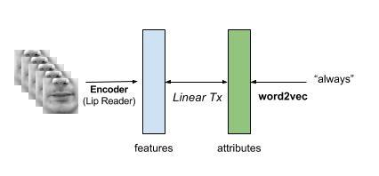

Lipreader, Critic analysis
Zero Shot Learning formalization

Use a critic to pin point top out of top-5
Train with GridCorpus, fine tune with Obama using Critic/Assessor and get better accuracy!
Classical unsupervised domain adaptation - to find out distribution
Self-training (Learner to improve learning over time)
Use cases - assistive, closed captions, security